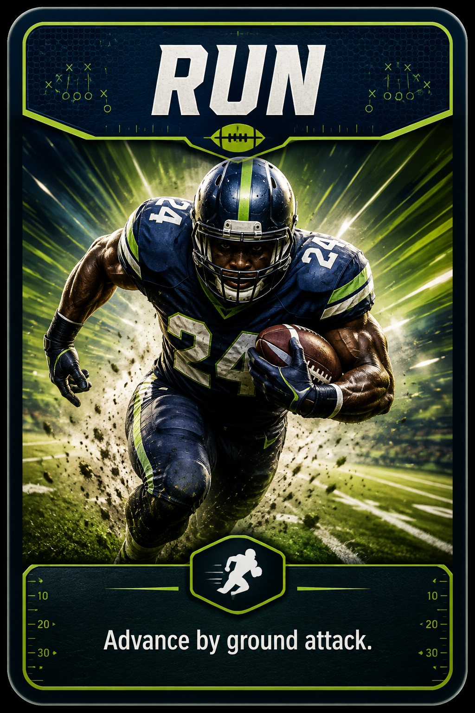
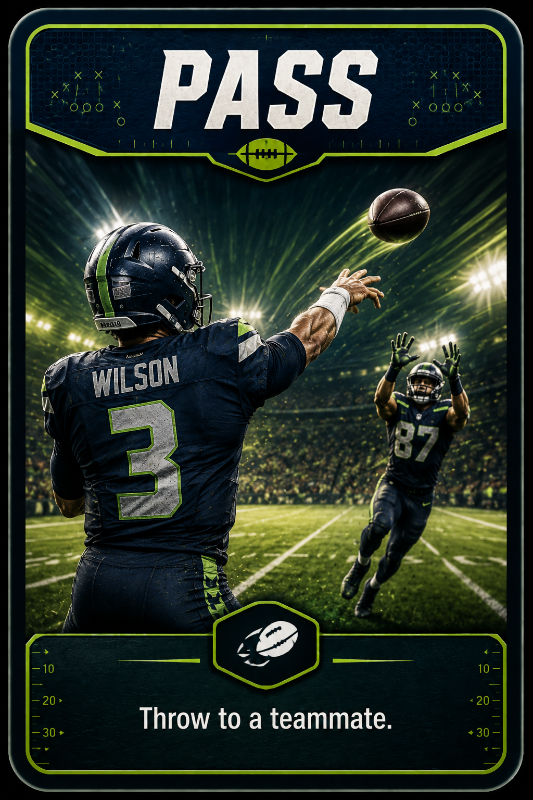
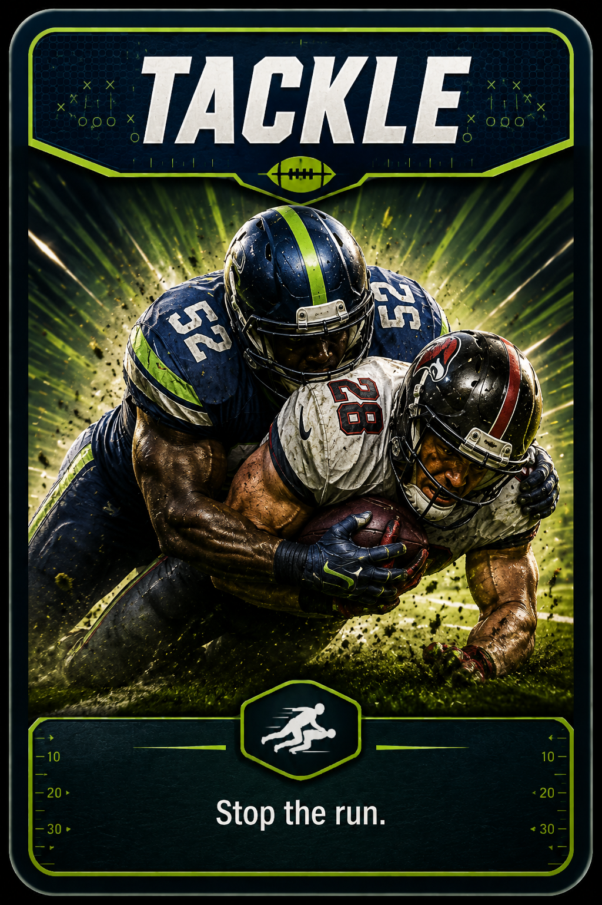
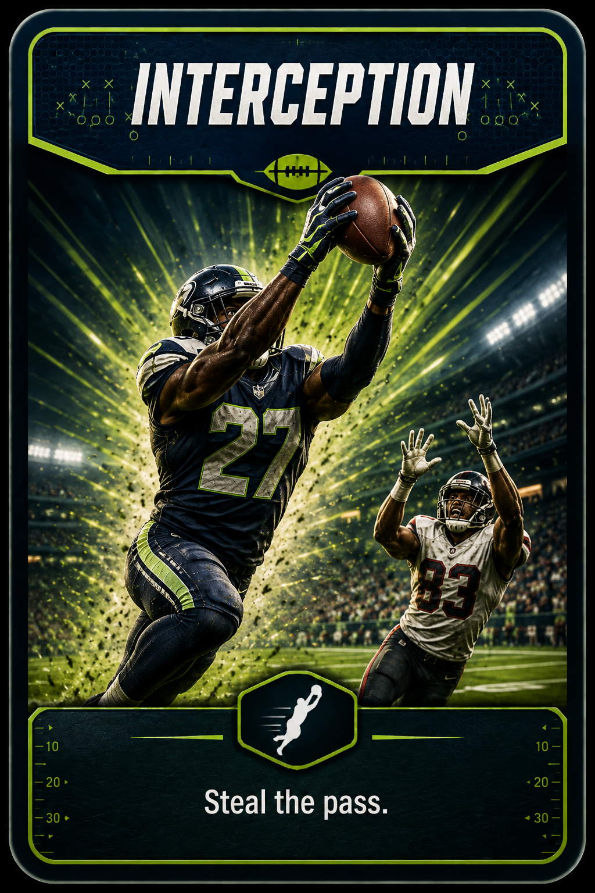
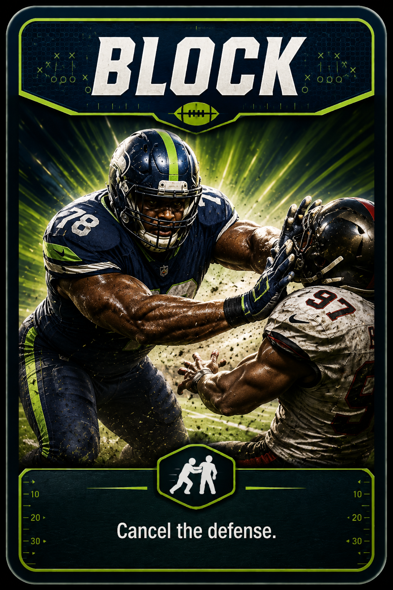
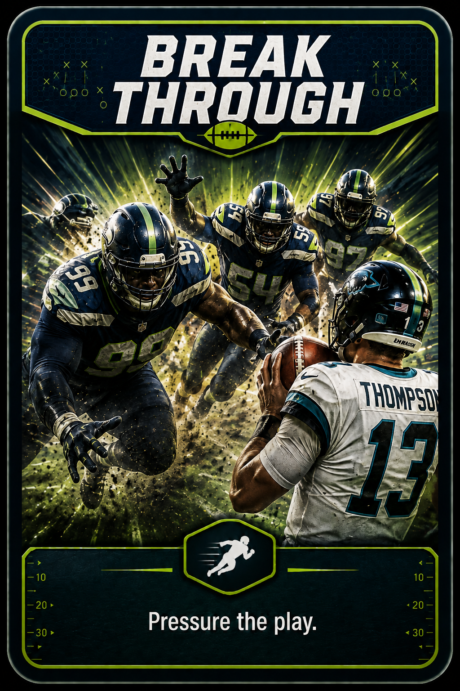

📘🏈 Casual Mode Rulebook
This is a reversed draw game: drawing the FOOTBALL CARD is good. The first player to collect 3 footballs wins immediately.
1. Goal
Everyone draws from the same shared deck. Every time you draw and resolve the FOOTBALL CARD, you gain 1 football. The first player to reach 3 footballs wins immediately.
2. Setup
- Recommended for 2–8 players.
- Deal 5 Action Cards to each player.
- Place exactly 1 FOOTBALL CARD into the shared draw deck.
- The FOOTBALL CARD is not part of a normal hand.
- Choose the first player randomly.
3. Turn Structure
- At the start of your turn, you may play 0 or more Action Cards.
- Resolve each Action Card completely before continuing.
- When you are finished playing Action Cards, make your normal draw from the shared deck.
- If you draw a normal Action Card, add it to your hand and end your turn.
- If you draw the FOOTBALL CARD, score it, return it to the shared deck, reshuffle, and draw again.
Extra draws caused by RUN, PASS, or BLITZ do not replace your normal end-turn draw unless the effect explicitly says otherwise.
4. FOOTBALL CARD

Drawing the FOOTBALL CARD gives you 1 football. Then return the FOOTBALL CARD to the shared deck and reshuffle the entire draw pile. The FOOTBALL CARD must not be left as the bottom card. After the reshuffle, draw 1 replacement card.
Your 3rd football wins immediately.
5. Action Cards

RUNDraw 1 extra card this turn. You still make your normal end-turn draw later.
PASSLook at the top 3 cards of the shared deck without changing their order, then draw the top card.
TACKLEChoose another player and take 1 random Action Card from that player's hand.
INTERCEPTIONReaction card: cancel RUN, PASS, or one draw.
BLOCKReaction card: cancel INTERCEPTION or TACKLE.
BLITZChoose a player. That player immediately draws 1 extra card.FOOTBALLGain 1 football, return this card to the shared deck, reshuffle, then draw again.6. Shared Deck and Discard Recycling
Played Action Cards go to the discard pile.
When the shared draw pile reaches 10 cards or fewer, shuffle the entire discard pile back into the shared deck.
Whenever FOOTBALL is returned, reshuffle the shared deck and make sure FOOTBALL is not the bottom card.
If FOOTBALL is drawn, score it first, reshuffle it back in, then draw a replacement card.